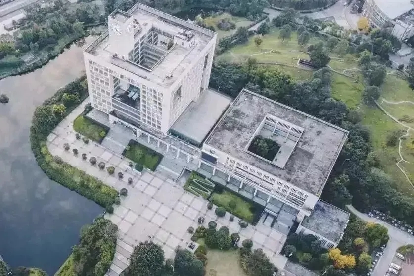
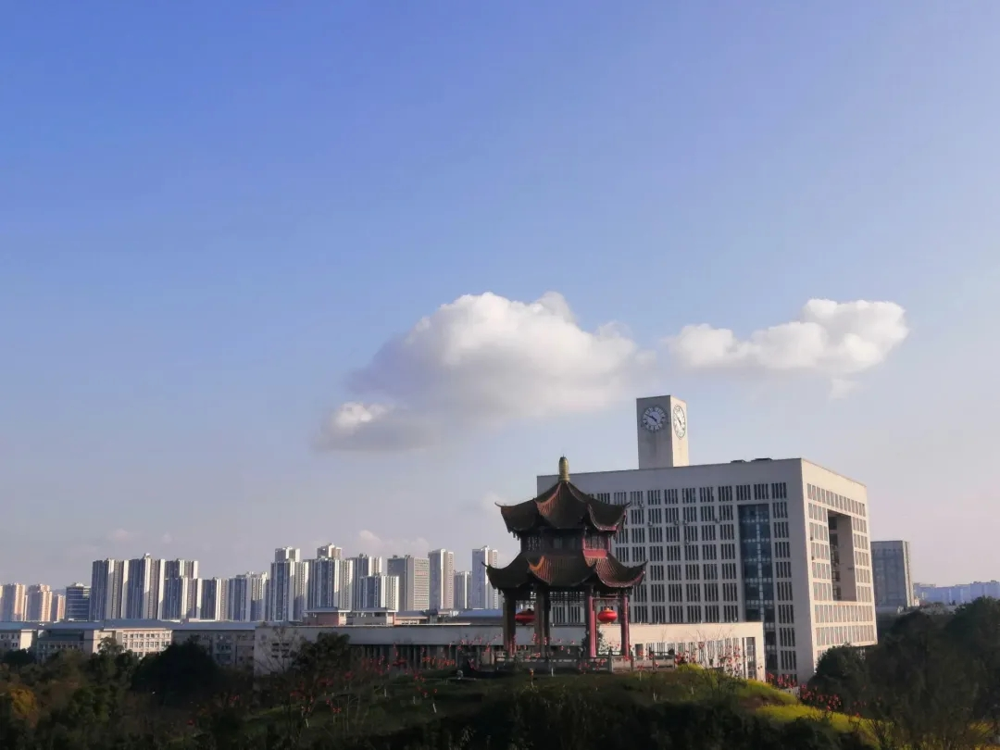
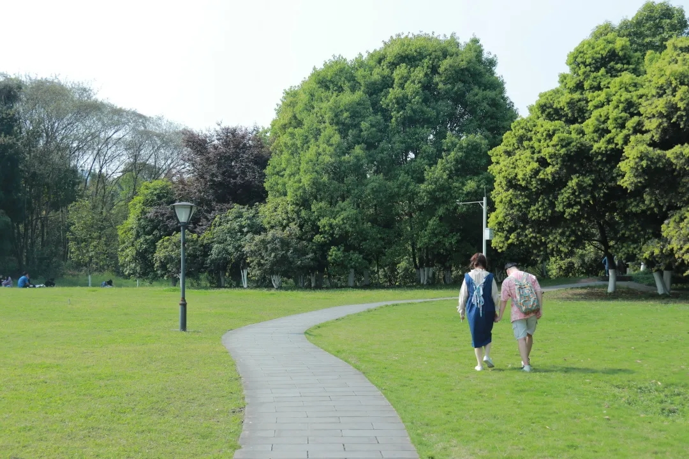
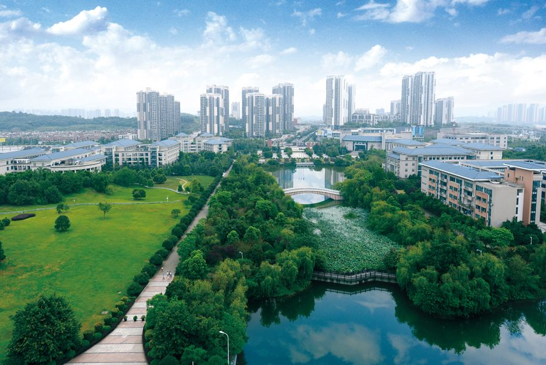
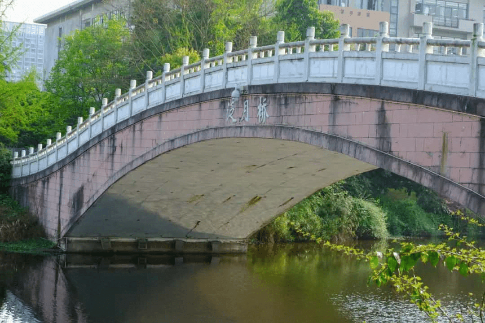

图书馆
图书馆位于三春湖西侧，地处校园中心位置，馆内共有260万余册纸质图书、35000余种中外文期刊(含电子期刊)、54个中外文数据库、93560册特藏文献。

博望亭
博望亭常常被重师的学子戏称为“望夫亭”，因为经常有一些女孩子站在亭子中等待男朋友到来，总会让人想起“望夫石”的典故。

情人坡
每所大学都有一个美丽的情人坡，而每一个情人坡都留下过一段段甜蜜浪漫的爱恋，见证过一对对恋人的邂逅相约……成为一代代走出校园的学子们的青春回忆

三春湖
三春湖位于图书馆东侧，地处校园中心位置，这是一湾清澈的湖水，湖面水平如镜，倒映着蓝天白云、青山绿树，一切美不胜收，让人仿佛走进画卷之中。
